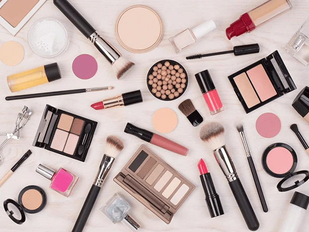

Guia de Produtos e Cosmetologia Aplicada
Entenda a ciência por trás das formulações cosméticas e escolha as melhores ferramentas para sua bancada.

Análise Química de Bases e Acabamentos
O universo dos produtos cosméticos é profundamente regido pelos avanços da engenharia química e da cosmetologia moderna. Para selecionar uma base ou corretivo ideal, o maquiador profissional precisa ir muito além da escolha da cor correta do subtom; é indispensável analisar a composição química rotulada no produto. Formulações à base de silicone (como o ciclopentasiloxano e a dimeticona) conferem excelente espalhabilidade, efeito de desfoque óptico nos poros e alta resistência à água e ao suor, sendo ideais para eventos sociais longos. Por outro lado, bases à base de água são excelentes para peles extremamente secas ou maduras, entregando um acabamento leve e luminoso que não acumula nas linhas de expressão.
O conhecimento sobre texturas e acabamentos varia substancialmente de acordo com a proposta estética desejada. O acabamento matte, caracterizado pela ausência total de brilho e alta concentração de pós adsorventes de oleosidade (como a sílica e o talco), é o favorito de peles oleosas em climas tropicais. Já os acabamentos do tipo "glow" ou "satin" incorporam óleos vegetais leves e micropartículas de mica sintética refletora de luz, projetando um aspecto de derme intensamente hidratada, viçosa e jovem, técnica amplamente valorizada em editoriais de moda internacionais e maquiagens do cotidiano.
A evolução tecnológica também trouxe as bases de tecnologia HD (Alta Definição), que contêm pigmentos micronizados revestidos com aminoácidos. Esses componentes especiais se fundem microscopicamente à textura da derme, impedindo que os produtos reflitam de forma esbranquiçada quando expostos a flashes de câmeras fotográficas profissionais ou iluminação pesada de estúdios televisivos. A compreensão desses fatores químicos evita reações alérgicas indesejadas e garante a perfeita compatibilidade entre os produtos aplicados.
Ferramentas de Aplicação e Cerdas Técnicas
A escolha da ferramenta de aplicação altera diretamente a cobertura e o acabamento final oferecido por um mesmo produto de maquiagem. Em vez de organizarmos essas ferramentas em tabelas frias, é muito mais funcional compreender a mecânica de atuação de cada uma delas de forma descritiva e aplicada à rotina de atendimento de beleza:
• Pincel Kabuki Reto (Fibras Sintéticas Densas): Esta ferramenta atua depositando uma quantidade massiva de pigmento na derme de forma compacta. Suas cerdas sintéticas não absorvem os componentes líquidos da base, o que confere uma cobertura alta e uniforme, ideal para camuflar completamente manchas severas de melasma, cicatrizes ou imperfeições acentuadas.
• Pincel Duo Fiber (Fibras Mistas Sintéticas e Naturais): Operando com comprimentos e texturas de cerdas variados, este pincel espalha o produto polindo a pele através de movimentos circulares suaves. O resultado na pele é um acabamento aerado, translúcido e de cobertura leve, perfeito para peles maduras que exigem viço e nenhuma marcação de linhas.
• Pincel Cônico (Cerdas Naturais de Alta Maciez): Graças às cutículas microscópicas presentes nos pelos naturais, este pincel retém com eficácia produtos em pó e os distribui com extrema suavidade. É a ferramenta indispensável para criar transições perfeitas de degradê nas sombras dos olhos, eliminando qualquer tipo de marcação gráfica rígida.
• Esponjas de Poliuretano Hidrófilo: Quando umedecidas com água ou bruma fixa, estas esponjas expandem seu tamanho original e ganham uma textura incrivelmente macia. Elas funcionam absorvendo o excesso de produto da pele enquanto assentam a base com precisão, gerando um efeito de segunda pele impecável e de alta aderência epidérmica.
Compreender a diferença prática entre o uso de cerdas naturais e sintéticas é o que dita a agilidade do atendimento e evita o desperdício crônico de insumos valiosos na bancada de trabalho, elevando o nível de profissionalismo do maquiador frente ao seu cliente.
Tecnologia de Fixação e Selagem Epidérmica
A fixação e a selagem constituem a etapa final de blindagem de toda a construção estética realizada no rosto. O uso de pós soltos micronizados é mandatório para selar os produtos cremosos sem adicionar peso ou textura espessa à derme. Esses pós contêm polímeros fixadores que retêm as moléculas oleosas da base, transformando a camada líquida em uma película totalmente seca, aveludada e resistente ao atrito físico das roupas ou abraços.
Brumas fixadoras fluidas, enriquecidas com extratos botânicos hidratantes e polímeros formadores de filme invisível, são borrifadas ao final de todo o processo. Elas desempenham um papel vital: devolvem o viço natural da pele que se perde temporariamente com o excesso de pós opacos e fundem todas as camadas aplicadas (primer, base, pó e contorno) em uma única estrutura coesa e resistente. Esse processo químico de fusão é o que garante que a maquiagem permaneça intacta sob condições extremas de clima úmido ou calor intenso.
A higienização correta e recorrente dessas ferramentas com sabões neutros antissépticos e soluções higienizadoras de secagem rápida preserva a integridade das cerdas a longo prazo, evita a proliferação de microorganismos nocivos e garante a biossegurança em cada atendimento realizado na rotina diária.